Attention — the How it works itself.
Attention is the How it works at the center of the course. This lecture starts with scaled dot-product attention, explains the KV cache, then compares practical ways to reduce its cost: sparse patterns, shared key/value projections in MQA and GQA, and low-rank compression in MLA.
§0The deck at a glance
The lecture locates attention inside a transformer layer, then develops scaled dot-product attention: , followed by the multi-head version. The rest of the deck focuses on the KV cache and the trade-offs behind methods that shrink it.
§1Where attention sits in the transformer
Before the math, a quick coordinate check. Attention is one specific block inside a much bigger stack, and the parameter budget it consumes is the reason nobody can just ignore it and move on. Three slides do the framing.
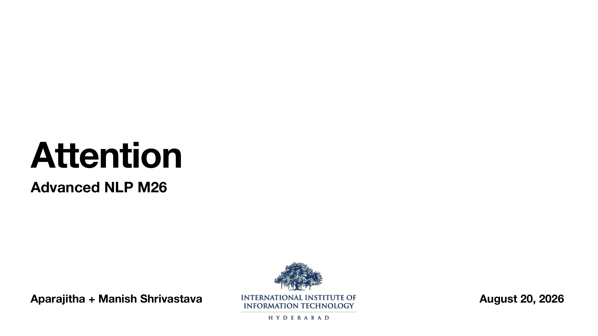
On the slide
Title card for Lecture 5 of Advanced NLP, Monsoon '26. Delivered by Aparajitha and Manish Shrivastava on August 20, 2026.
What to take from it
The word on the slide is just Attention. Not "self-attention", not "the transformer" — the whole lecture treats attention as a How it works you can take apart and modify, not as one particular fixed formula. That framing matters, because half of the deck is a tour of models that changed the How it works while still calling it attention.
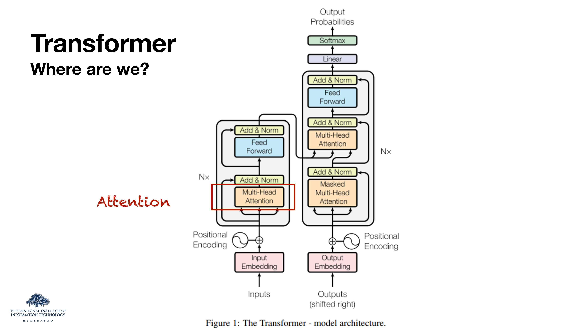
On the slide
The original Vaswani et al. (2017) transformer diagram with the encoder's Multi-Head Attention block circled in red. It is one of three attention blocks in the whole architecture — the other two are the masked multi-head attention at the bottom of the decoder (which stops a token from looking at its own future) and the cross multi-head attention above it (which lets the decoder look back at the encoder). All three are the same How it works with different inputs.
What to take from it
Reading the diagram vertically: token embeddings enter at the bottom, get an additive positional signal (that was Lecture 4), then flow up through N identical layers. Each layer does the same two things — an attention sub-layer followed by a feed-forward sub-layer — with a residual connection and a layer-norm around each. So when we say "the attention lecture", we mean the tan rectangle. Everything else in the diagram is scaffolding around it.
Lecture 2 covered the whole transformer at a survey level; this lecture zooms into just the tan box. Later lectures will replace it with different things (sliding, sparse, state-space) — but the diagram stays the same shape.
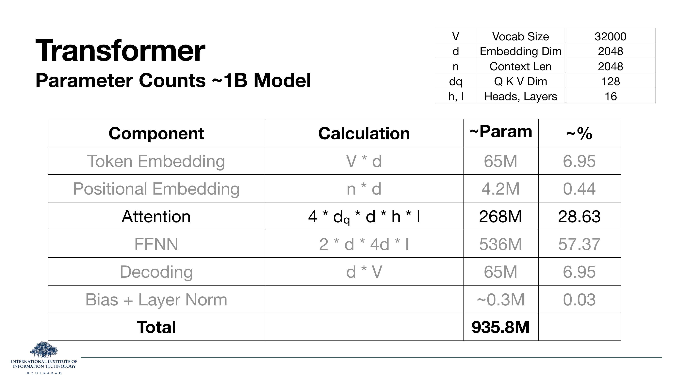
On the slide
A back-of-envelope parameter count for a ~1B-parameter model with vocab 32k, embedding dim d
= 2048, context n = 2048, per-head dim dq = 128, and 16 heads across
16 layers. The right-hand column is the fraction of the whole model each component takes:
| Component | Calc | Params | % |
|---|---|---|---|
| Token embedding | V·d |
65M | 6.95 |
| Positional embedding | n·d |
4.2M | 0.44 |
| Attention | 4·dq·d·h·l |
268M | 28.63 |
| FFN | 2·d·4d·l |
536M | 57.37 |
| Output head | d·V |
65M | 6.95 |
| Bias & LayerNorm | — | ~0.3M | 0.03 |
What to take from it
The attention block is 29% of the parameters of a modern LM. The four in
4·dq·d·h·l is the four projection matrices per layer — WQ, WK, WV, and the output projection WO. Multiply
by heads h and layers l and you get 268M for a single-billion-parameter model.
Attention is not the biggest component — the feed-forward network is, at 57%. But attention is the one that scales quadratically with sequence length at inference time, and its per-token memory (the KV cache, §3) is what actually breaks when you try to run these models on real workloads. That is why the field spends so much effort making attention smaller, and almost none making the FFN smaller.
§2Attention as it was invented
Four slides. The scaled dot-product formula, the multi-head wrapper around it, and an honest accounting of what those two constructions buy you and what they cost. Every variant in the rest of the deck is pushing on one of these three levers — the projections, the softmax, or the number of heads.
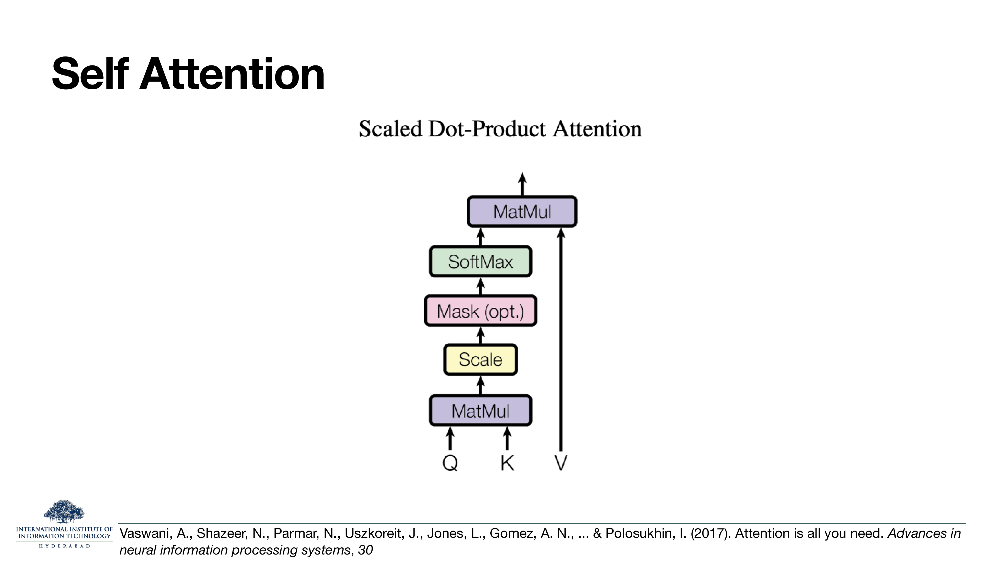
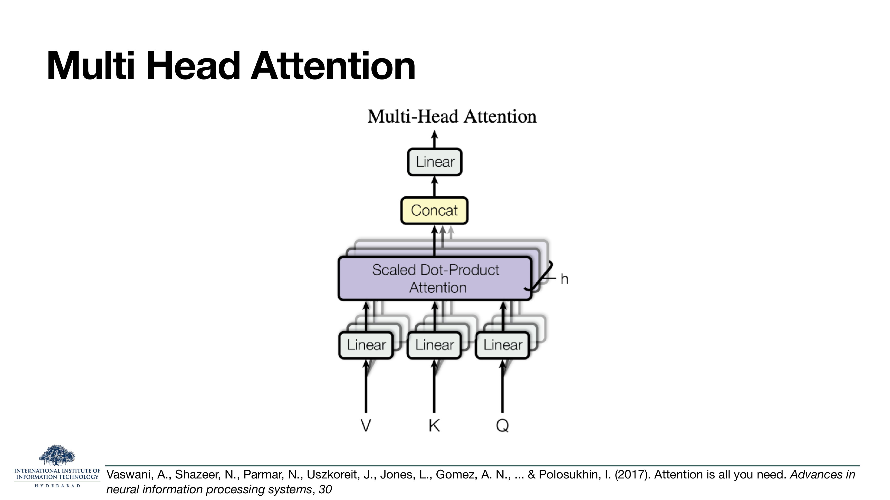
On these slides
The two diagrams from the Attention Is All You Need paper, side by side. Slide 4 is one attention head: three inputs called Q (query), K (key) and V (value), a matrix-multiply that computes similarity between every query and every key, a division by (the "scale"), an optional mask (used in the decoder), a row-wise softmax, and a final matrix-multiply that mixes the value vectors according to those weights. Slide 5 is the multi-head wrapper — the same operation done h times in parallel with different learned projections, then concatenated and mixed by one more linear.
What to take from it
Every token gets to project itself into three roles at once. Its query is what it is looking for. Its key is a label saying what it is. Its value is the payload it will contribute if a query decides it is relevant. The whole operation, for a batch of n tokens, collapses to one equation:
The matrix is n × n: entry (i, j) is the dot product of query i with key j. Softmax turns each row into a probability distribution over tokens, and that distribution reweights the values. The division by keeps the pre-softmax logits from growing large with the dimension of the key vectors, which would push the softmax into a near-argmax and kill gradients.
Why multi-head
The multi-head version splits the d-dimensional embedding into h smaller
d/h-dimensional slices and runs the same attention operation on each slice with its own Q, K,
V projections. Then the outputs are concatenated back and multiplied by WO. Each head can specialise: one might attend to the previous token,
another to the subject-verb agreement, another to the discourse antecedent. The final linear lets the
model mix those specialists back into a single stream.
Given input X of shape (n, d): Q = X WQ, K = X WK, V = X WV, each of shape (n, dk). The attention output is (n, dv). In the paper dk = dv = d/h, so the concat of h heads has shape (n, d) again — and WO is (d, d). The multi-head block preserves the input shape.
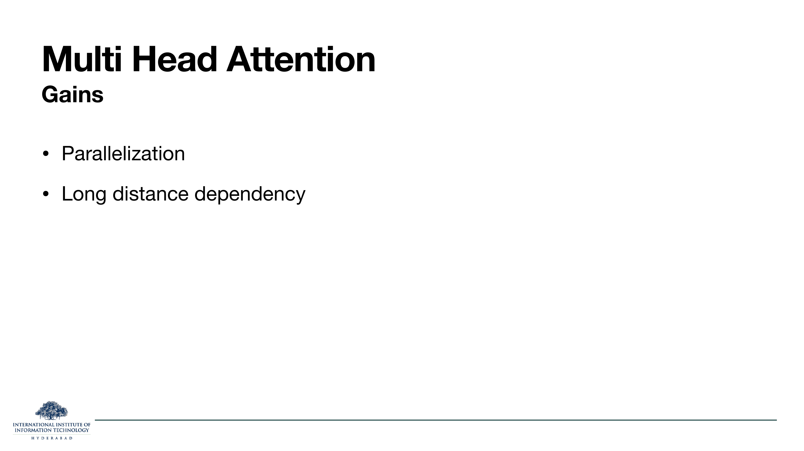
On the slide
Two things multi-head attention buys you.
- Parallelization. The whole (n, n) attention matrix is one dense matrix multiply on the GPU. Every query in the sequence can look at every key at the same time. Contrast this with a recurrent network, which has to process token 1, then token 2, then token 3, sequentially.
- Long distance dependency. The path length between any two tokens is exactly 1 attention operation — a query at position 1000 can attend to a key at position 1 in a single layer. A recurrent network needs 999 update steps to move information across that same span, and information decays along the way.
The transformer beat the LSTM on machine translation not because attention was smarter, but because attention parallelises. Every token in a batch computes its output in one GPU-friendly matrix multiply, so you can throw hardware at it and train on much more data in the same wall-clock time.
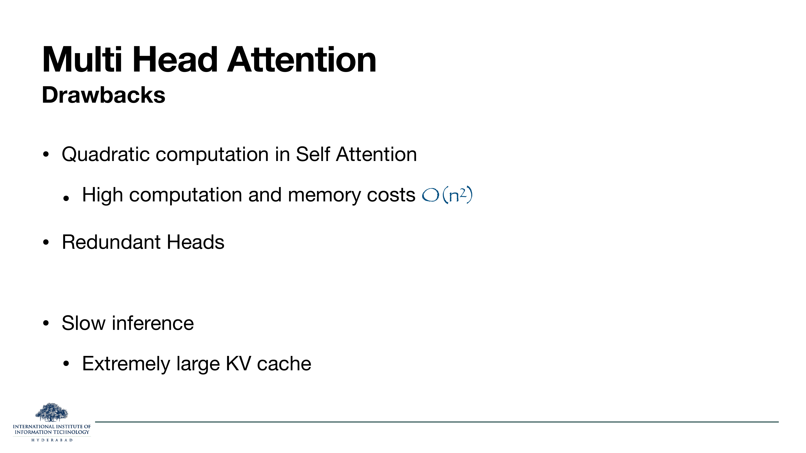
On the slide
Three ways the default multi-head attention costs you, and they are exactly the three problems the rest of the deck tries to fix.
- Quadratic compute and memory in n. The matrix has n² entries. Double the sequence length, and both the FLOPs to compute it and the memory to store it go up by 4×. This is the reason a plain transformer chokes on a 100k-token context.
- Redundant heads. Empirical analyses (Michel et al. 2019; Voita et al. 2019) show that most heads in a trained model can be pruned without hurting performance. You are paying for capacity that is not doing distinct work.
- Slow inference & extremely large KV cache. At inference time, you regenerate one token at a time, and you need to keep the keys and values of every previous token in memory. For long contexts and large models that KV cache is enormous — bigger than the model itself in some regimes.
The quadratic-cost problem is answered by Longformer (§4) and, more ambitiously, by state-space models and Flash Attention in Lecture 6. The KV-cache-size problem is answered by MQA, GQA and MLA (§§5–6).
§3The KV cache — why every optimisation targets it
Six slides on the single most consequential engineering detail in modern LLM inference. When a decoder-only transformer generates text one token at a time, it does not need to re-compute keys and values for the tokens it has already seen — those are functions of the input only, and they don't change. Caching them turns generation from per-token compute into . The catch is memory: that cache is the working state of the model at inference, and it grows every time you emit a token.
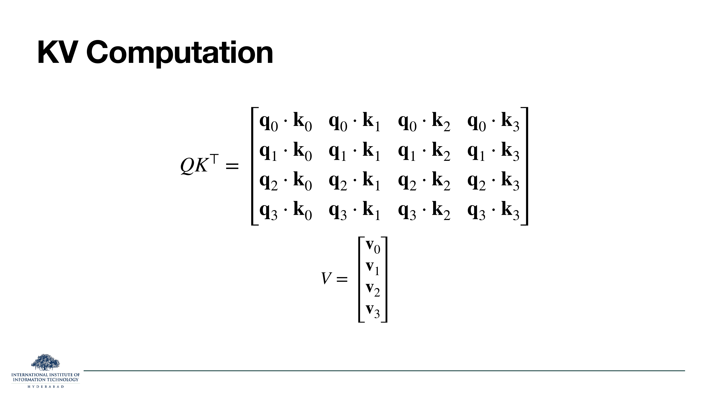
On the slide
The (n, n) similarity matrix written out for a 4-token sequence. Row i is the dot products of query qi against every key k0, k1, k2, k3. Below it, the value matrix V stacked as one row per token.
What to take from it
Two observations sit under this innocuous-looking picture. First, every entry of the matrix costs one dot product, so the matrix costs n² dot products. Second — and this is the one that motivates the cache — the keys k0…k3 and values v0…v3 are computed from the input tokens by fixed projections, so they don't change once the token has been seen. Only the last row of the matrix (the queries from the newest token) is genuinely new work.
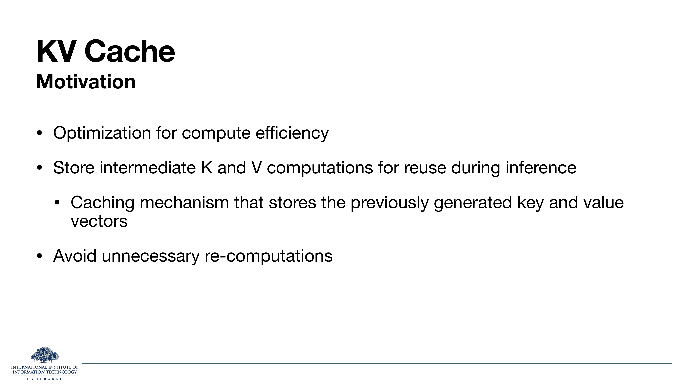
On the slide
The rationale in one bullet list: at inference, we should store the previously computed K and V vectors and reuse them, rather than recomputing the whole prefix every step.
What to take from it
Autoregressive generation is the loop: given tokens 1…t, produce token t+1. Naively that means running the whole transformer on the growing prefix each time — a lot of duplicated work. But the K and V for tokens 1…t are the same whether you are generating token t+1 or t+2. So we compute them once, park them in GPU memory, and on the next step we only compute K and V for the single new token and append them.
New token xt comes in → project it to qt, kt, vt. Append kt, vt to the cache. Attention output for position t is qt against every cached key, softmax-weighted mix of every cached value. New work: one row of the attention matrix, not the full matrix.
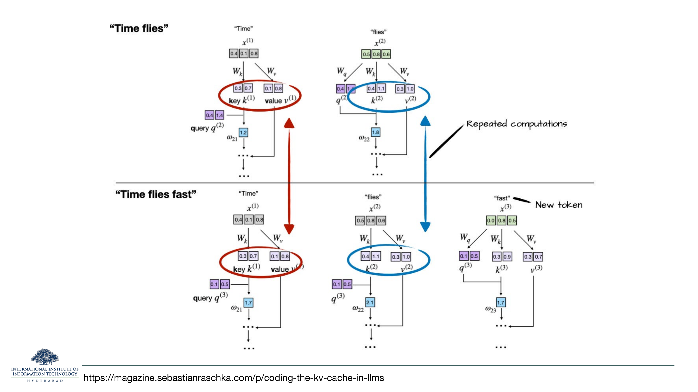
On the slide
A visualisation borrowed from Sebastian Raschka's KV-cache write-up. The top row generates one step of "Time flies". The bottom row generates the next step, "Time flies fast". Notice that the key and value vectors for "Time" (red circle) and "flies" (blue circle) are literally the same numbers in both rows — the projections don't depend on anything downstream. Only the vectors for the new token "fast" are genuinely new.
What to take from it
If you were doing this without a cache, you would recompute those red and blue circles every single step of generation. For a 4k-token output that means computing k0 about 4000 times. The KV cache is the observation that you can just save them.
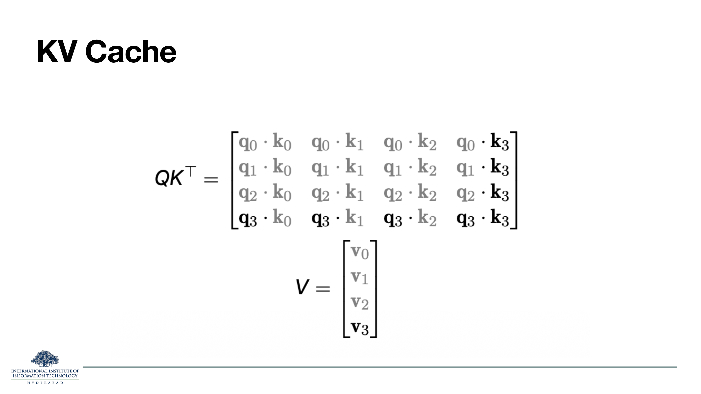
On the slide
The same 4-token attention matrix from slide 8, but with the first three rows drawn in grey and only the last row — q3 against k0, k1, k2, k3 — drawn in black. That black row is what the model actually computes when it is emitting the 4th token, given the cache.
What to take from it
The grey rows already happened, in earlier steps. They are baked into the outputs the model has already emitted. From the current step's point of view they are history — you never need them again. This is why the cache stores K and V (needed to be multiplied against future queries) but does not need to store past Q, and does not need to store the past attention matrix itself.
The KV cache is the reason inference cost per token stays linear in context length even though training cost is quadratic. Every 1000-token completion you get from a chatbot is riding on this trick.
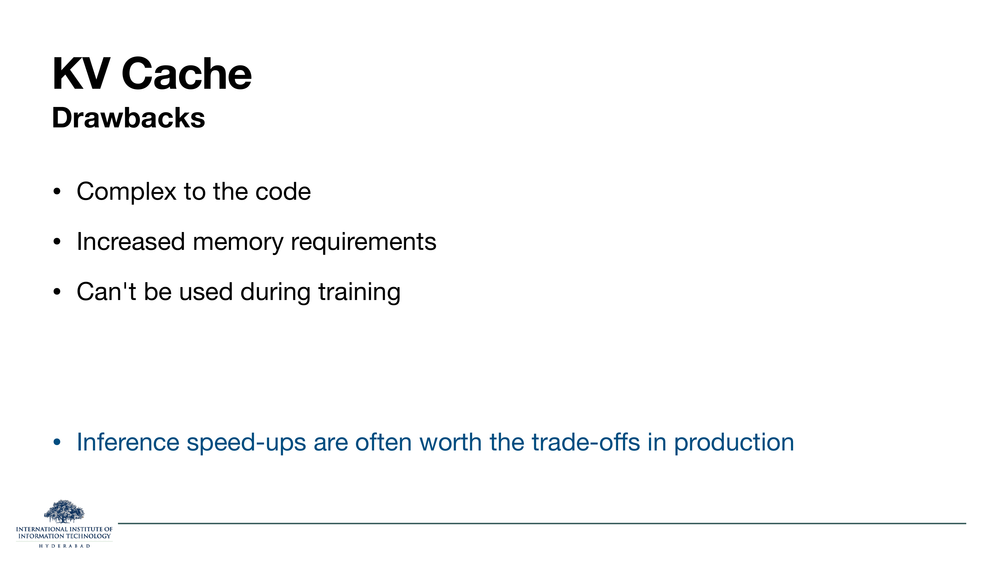
On the slide
Three real costs of the cache, and a one-line verdict.
- Code complexity. Every layer needs a place to stash the growing cache, and the attention kernel needs a "prefill" mode (compute the whole prefix at once, populate the cache) and a "decode" mode (one token at a time, append to the cache).
- Memory. The cache is a per-request working buffer sitting in GPU memory. It scales with context length × layers × heads × head-dim — and we will do the actual arithmetic on slide 13.
- Training. Training uses teacher forcing — the whole sequence is present at once, so the model computes attention for every position in parallel and there is nothing to cache. The KV cache is an inference-only optimisation.
Why we accept those costs
The blue bottom line says it: at inference, the speed-up is enormous — you go from O(n) work per token to O(1) work per token for the K/V projections, and from re-running the whole prefix through the model to just the new token. Every production LLM serving stack uses it.
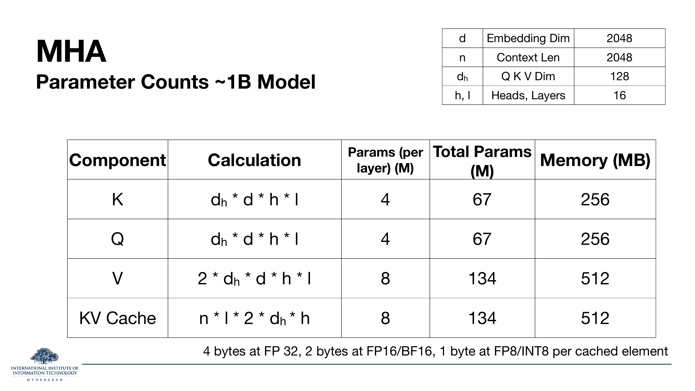
On the slide
The numbers. For our reference 1B model (d = 2048, n = 2048,
dh = 128, 16 heads, 16 layers):
- WK and WQ — 67M parameters each, 256 MB each in FP16.
- WV (bundled with WO, hence the 2×) — 134M parameters, 512 MB.
- KV cache for a full 2048-token context — 134M elements, 512 MB per request in FP16.
What to take from it
Read that last line again. For a single 1B model serving a single 2k-context request, the cache is half a gigabyte. Scale to a 70B model with 128k context and dozens of concurrent users and the KV cache becomes the dominant memory user on the GPU — bigger than the model weights themselves. Every optimisation from §4 onwards in this lecture is a different attempt to make that number smaller without hurting quality.
The model weights are shared across all users on a GPU. The KV cache is not — every concurrent request gets its own. So multi-user serving multiplies the KV cost, not the weight cost. This is why cache-size optimisations are the highest-leverage change you can make to a serving stack.
§4Longformer — sparsifying the attention matrix
The first attack on the cost is the simplest: don't compute every entry of the attention matrix. Longformer (Beltagy, Peters & Cohan, 2020) picks a pattern of cells that are worth computing and zeros out the rest. Seven slides walk through the roadmap slide first, then the three patterns Longformer combines.
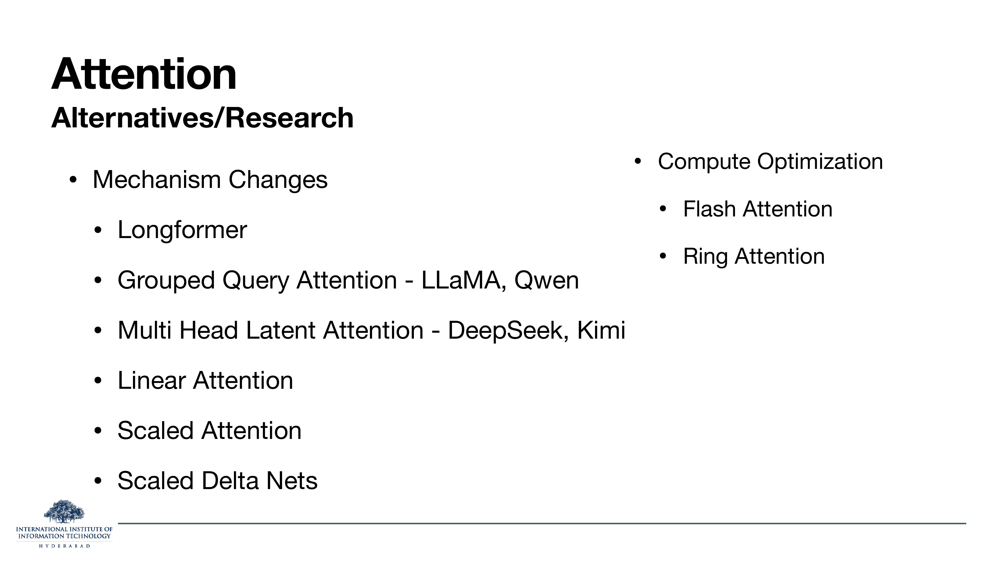
On the slide
The taxonomy for the rest of the deck (and much of the next lecture). Two buckets:
- Mechanism changes — Longformer (sparse pattern), Grouped Query Attention (LLaMA, Qwen), Multi Head Latent Attention (DeepSeek, Kimi), Linear Attention, Scaled Attention, Scaled Delta Nets. These change what attention is.
- Compute optimisation — Flash Attention, Ring Attention. These leave the math untouched and just execute it more cleverly on the GPU (Flash) or across multiple GPUs (Ring).
How to read this slide
The rest of Lecture 5 covers the top three in the left column: Longformer, MQA/GQA and MLA. The compute-optimisation bucket and Flash/Ring specifically are the subject of Lecture 6. Linear Attention and Scaled Delta Nets will appear in the alternate-architectures block later in the semester.
Grouped Query Attention is listed under "LLaMA, Qwen" because those model families made it standard. MLA under "DeepSeek, Kimi" for the same reason — you can trust the model tag as a hint about which family invented or popularised each variant.
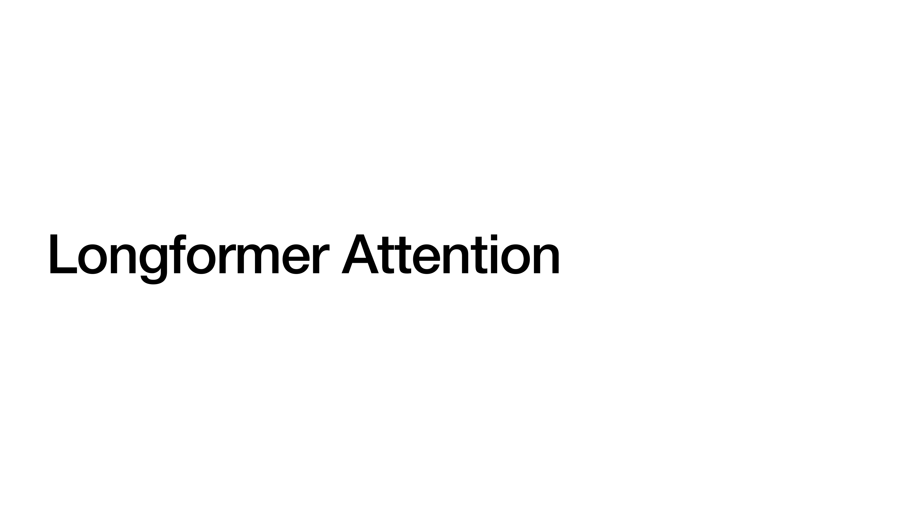
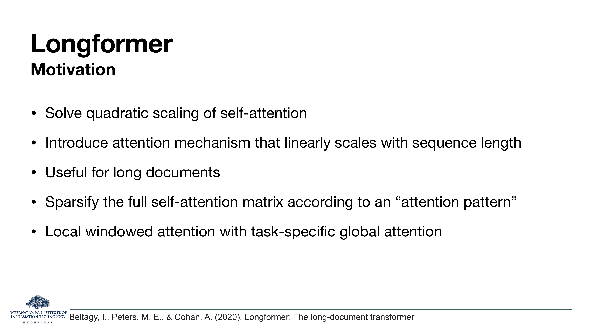
On these slides
A section-header slide and the paper's elevator pitch. Longformer is the "long-document transformer" — a variant of the transformer whose attention scales linearly in sequence length instead of quadratically, by sparsifying the attention matrix according to a fixed attention pattern. The pattern combines local windowed attention (each token looks at its neighbours) with a small amount of task-specific global attention (a few designated tokens look at everything).
What to take from it
The n² cost comes from filling every cell of the attention matrix. But intuitively you don't need every cell — most tokens in a long document are irrelevant to any given other token. If we restrict the matrix to a sparse set of cells, we cut the cost. The design question is: which cells to keep. Longformer's answer is three overlapping patterns, coming on the next three slides.
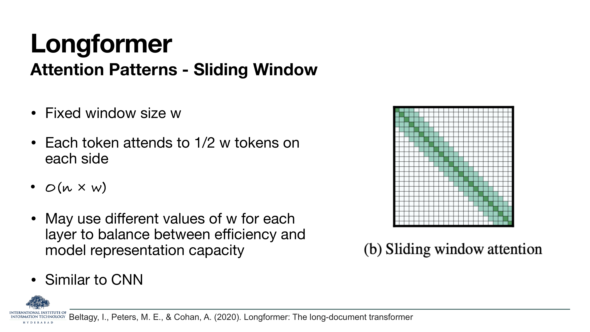
On the slide
The first Longformer pattern. Each token attends only to a window of width w around it (w/2 to the left, w/2 to the right). The picture is the attention matrix with a green band along the diagonal — all cells outside that band are zeroed out.
What to take from it
Cost drops from to , which is linear in n when w is fixed. The "similar to CNN" note is the honest defence of the design: a single sliding-window layer only reaches w/2 neighbours, but stacking L layers gives you a receptive field of L·w/2 — the way a stack of 3×3 convolutions can eventually see the whole image. Distant tokens can still influence each other, just indirectly, over several layers.
Longformer sometimes uses small w in the lower layers (focus on local context) and larger w in the higher layers (broader synthesis). The receptive-field argument still works, just with a variable stride.
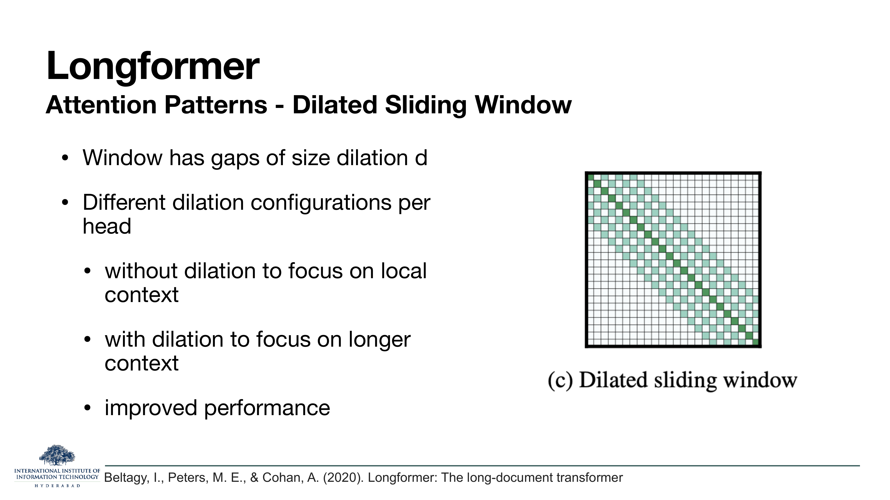
On the slide
The second pattern. The window still slides along the diagonal, but with gaps of size d between attended cells — like the dilated convolutions in WaveNet. Different heads use different dilations: some without dilation for local context, some with large dilation for far-reaching context, all in the same layer.
What to take from it
A dense window of width w covers a stretch of w tokens. A dilated window of width w with dilation d covers a stretch of w·d tokens (but only sees w of them, at strides of d). So for the same compute budget, dilation extends the receptive field. Making different heads use different dilations means a single layer can simultaneously reason about local and long-range structure.
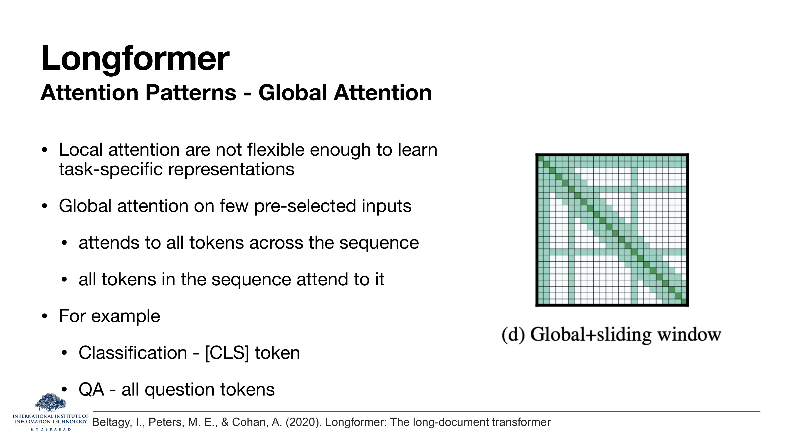
On the slide
The third pattern. A small number of pre-selected tokens get global attention: they attend to every token in the sequence, and every token attends to them. In the picture, that shows up as two full rows and two full columns of green on top of the band.
What to take from it
Local patterns can miss the point of a task. For classification, the [CLS] token needs to
look at the whole document to produce a summary — a band around [CLS] is not enough. For
extractive question-answering, every candidate answer span needs to attend to every question
token. So Longformer lets you nominate a handful of tokens as "global" per task, and pays for those
extra rows and columns. The cost stays because the number of global tokens is a small constant.
This is where Longformer stops being a pure architecture and becomes task-aware. You choose which tokens are global based on the task you are training for. That is unusual — most transformer variants are task-agnostic.
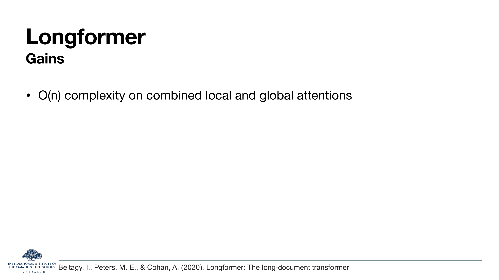
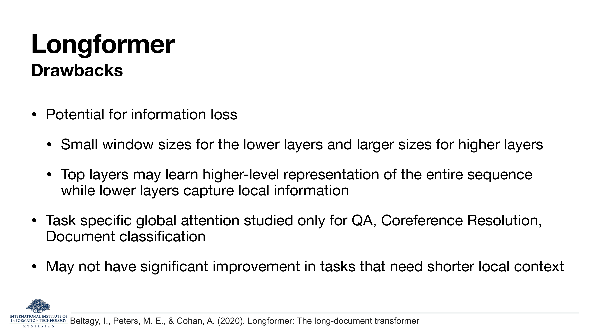
On these slides
Gains: linear complexity in n. Drawbacks: three, worth reading carefully.
- Information loss. A narrow window can starve the lower layers of context. The paper's recipe is to use small w low in the stack (local features) and larger w high in the stack (whole-sequence synthesis), on the analogy of CNN receptive fields.
- Task-specific global attention. Longformer has only been carefully studied for QA, coreference resolution and document classification. For a new task, the "which tokens are global?" question is a modelling decision you have to make yourself.
- May not help short-context tasks. If your inputs comfortably fit in 512 tokens, a plain transformer is fine and Longformer's overhead may not pay off.
Longformer is the archetype of the sliding-window family. Lecture 6 generalises this to a whole taxonomy of sparse patterns — BigBird, GPT-2's local attention, and so on — all of which are variants on "which cells of the matrix do we compute".
§5MQA and GQA — fewer keys and values
The KV cache is big because there are many heads and each head has its own K and V. What if several query heads shared a single K and V? That is multi-query attention (Shazeer 2019). And what if we tuned the sharing ratio, so it was less aggressive? That is grouped-query attention (Ainslie et al. 2023). Fifteen slides walk through both.
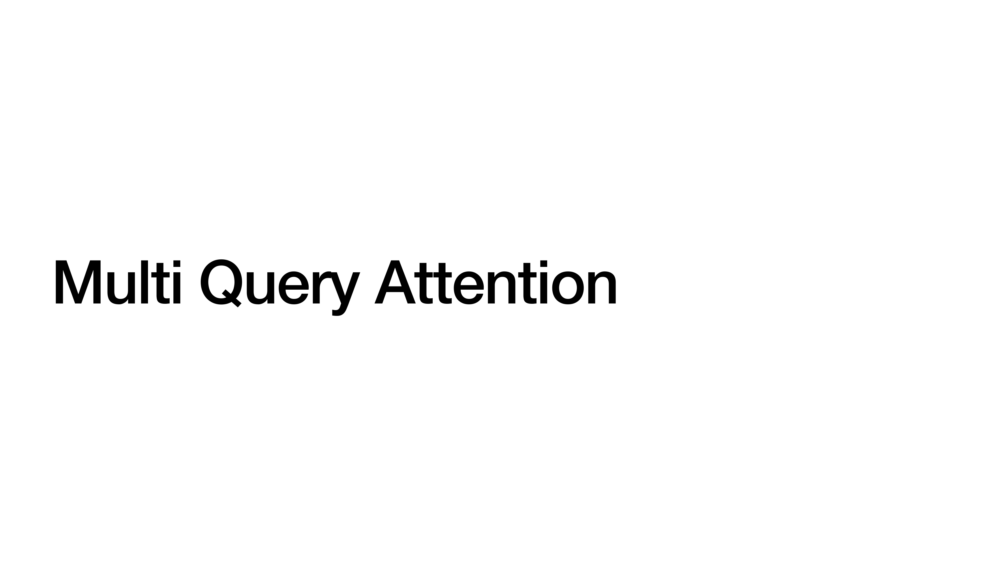
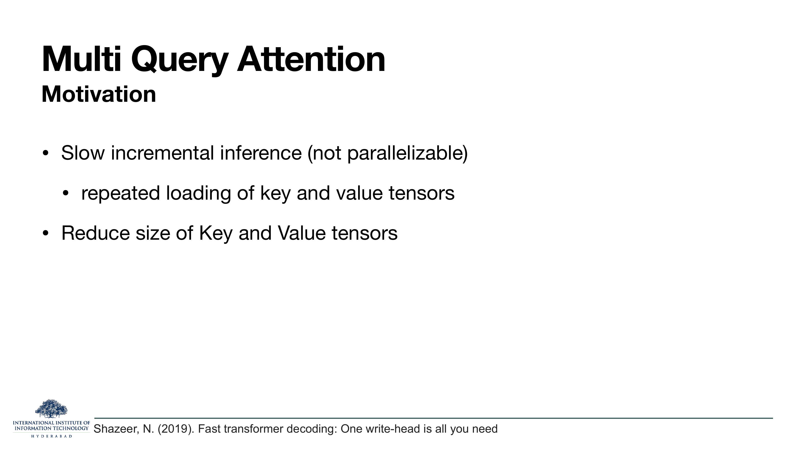
On these slides
Section header, then the motivation for Shazeer's Fast Transformer Decoding: One write-head is all you need (2019). Two problems the paper is trying to solve:
- Slow incremental inference. During generation you emit one token at a time. That is inherently serial (each token depends on the previous one). And every step re-loads the K and V tensors from memory to compute new attention — that memory bandwidth becomes the bottleneck.
- Big K/V tensors. The KV cache is h × per-head-size × sequence-length. Bring h down and the cache shrinks proportionally.
Why "one write-head"
The paper's title is metaphorical: in MHA every head "writes" its own K and V. Shazeer's paper says only one write-head is needed — many query heads can share the same K and V. Hence Multi-Query Attention.
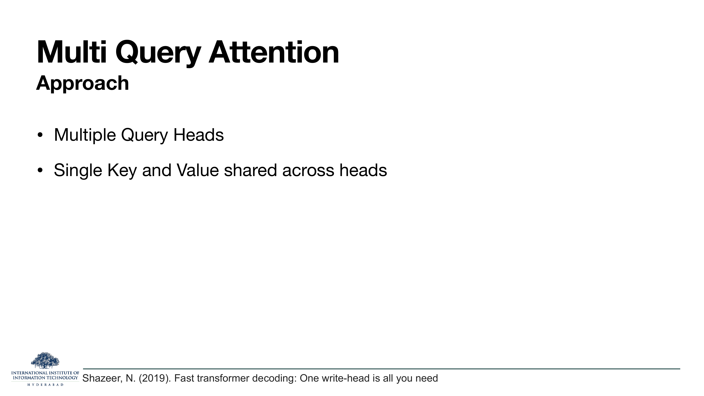
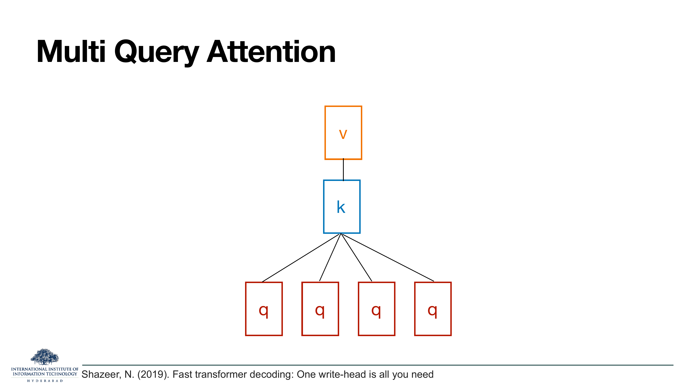
On these slides
Slide 24 states the recipe: keep h query heads (so each still has its own WQi), but collapse to a single pair of WK and WV shared by all heads. Slide 25 is the picture: four q boxes at the bottom, one shared k and one shared v at the top.
What to take from it
Nothing in the attention math requires that the K and V be per-head. If every query head asks its questions in a slightly different way but the answers all come from the same knowledge, you can share the answer store. Each head still does its own softmax and its own weighted sum — it is only the K and V projections that are shared.
MHA cache scales as 2 · h · dh · n · l (factor of 2 for K and V). MQA cache scales as 2 · dh · n · l — the h is gone. For our 1B model with h = 16, that is a 16× reduction in KV memory.
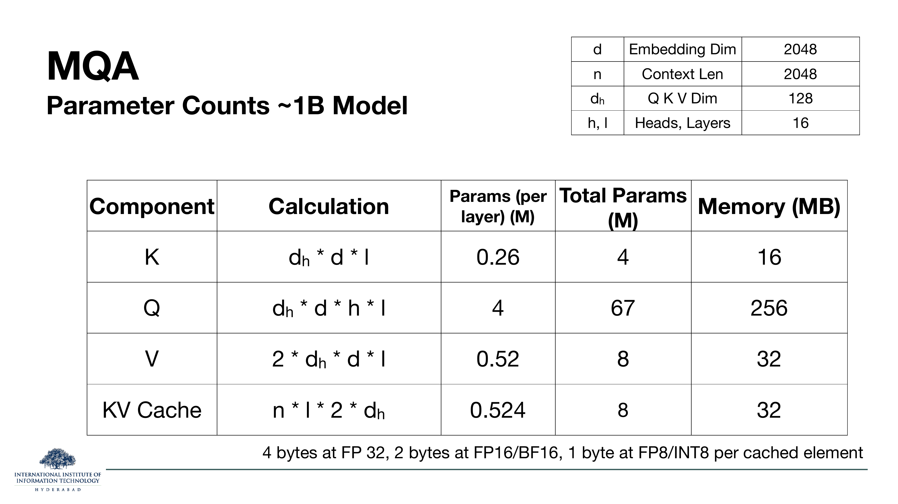
On the slide
Same 1B model, but with MQA. Compare against MHA (slide 13):
| Component | MHA | MQA | Ratio |
|---|---|---|---|
| WK params | 67M | 4M | 1/16 |
| WQ params | 67M | 67M | 1 |
| WV params | 134M | 8M | 1/16 |
| KV cache | 512 MB | 32 MB | 1/16 |
Why the numbers are so much smaller
Any factor that was multiplied by h for K and V — the projection matrices and the cache — divides by h. The query projection WQ is unchanged because we still have h query heads. In FP16 the KV cache for a 2k-context request goes from 512 MB to 32 MB. That is a serving-scale difference.
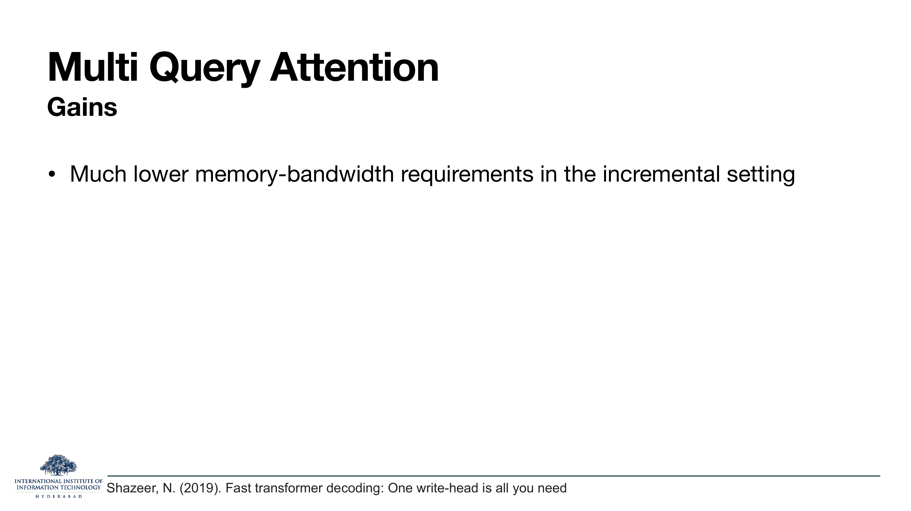
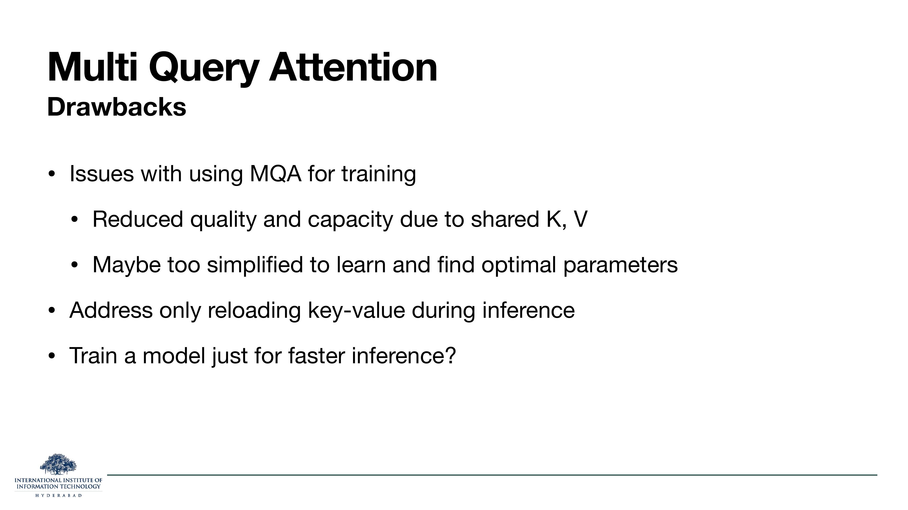
On these slides
The trade. Gains: memory-bandwidth in incremental (single-token) decoding drops dramatically, because the loaded K and V tensors are 16× smaller. Drawbacks:
- Reduced quality. One shared K/V pair may not be expressive enough. Different heads had different learned Ks and Vs for a reason.
- Only helps inference. Training does not use the KV cache, so training-time compute is barely affected. That leads to an uncomfortable question: should we train a model in a way that hurts training quality just to speed up inference?
The paper's own answer is "yes, if the quality loss is small enough". But the field's answer, a few years later, was "no — do grouped-query instead". That is the next block of slides.
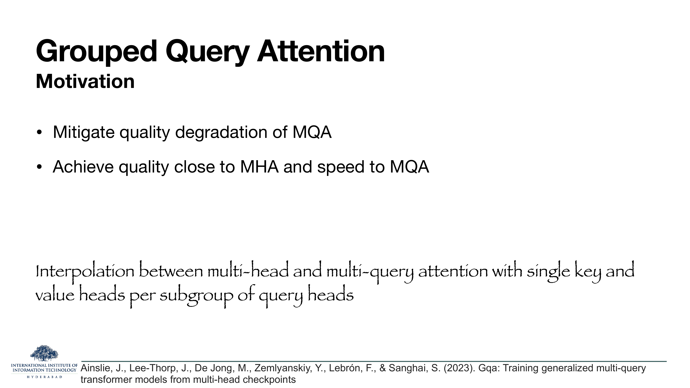
On these slides
Section header, then the motivation for Grouped-Query Attention (Ainslie et al. 2023). GQA is explicitly an interpolation between MHA and MQA: MHA has one K and V per head, MQA has one K and V shared across all heads, GQA has one K and V per group of heads. Choose the group count and you slide between the two extremes.
What to take from it
The design goal is "quality close to MHA, speed close to MQA". Empirically the paper (and every LLaMA release since) shows that a small number of groups — 4 or 8 — gets you most of the way to MHA quality while keeping most of MQA's memory savings.
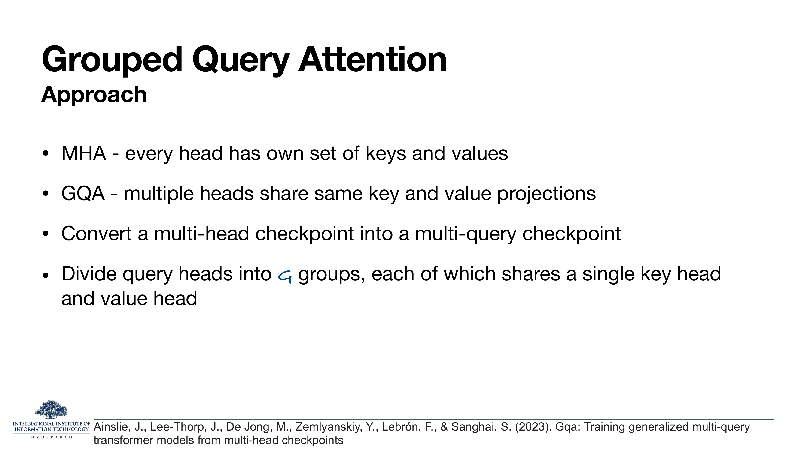
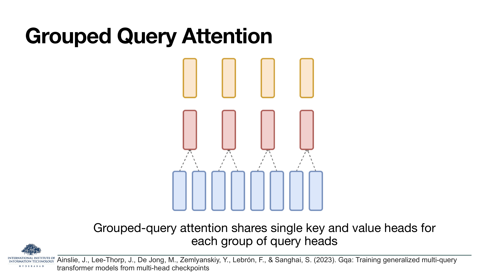
On these slides
The concrete recipe. Divide the h query heads into G groups (where 1 ≤ G ≤ h). Each group of h/G queries shares a single K head and a single V head. In the picture, 8 blue query heads are grouped into 4 pairs, each pair mapping to one red K head and one orange V head.
Two special cases
- G = h: every query head has its own K/V — this is MHA.
- G = 1: all query heads share one K/V — this is MQA.
Everything between is a genuine hybrid. LLaMA-2-70B uses G = 8 with h = 64, meaning each K/V head serves 8 query heads.
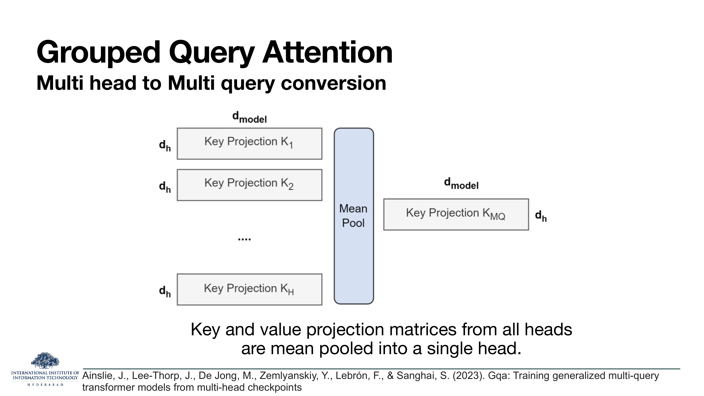
On the slide
A neat engineering trick from the GQA paper. To avoid training a GQA model from scratch, you can convert an existing MHA checkpoint into a GQA one by mean-pooling the K (and V) projection matrices within each group. Then you fine-tune briefly to recover quality.
Why this matters
MHA-trained checkpoints exist by the terabyte. GQA-trained checkpoints, in 2023, did not. Mean-pooling gives you a way to reuse the existing investment: take a released MHA model, average the projections group-wise, uptrain for ~5% of the original compute, and ship. LLaMA-2 was released using this exact recipe.
For each group of h/G heads, the group's K projection is Kgroup = mean(Ki1, …, Kih/G). Same for V. The Q projections and everything else are untouched.
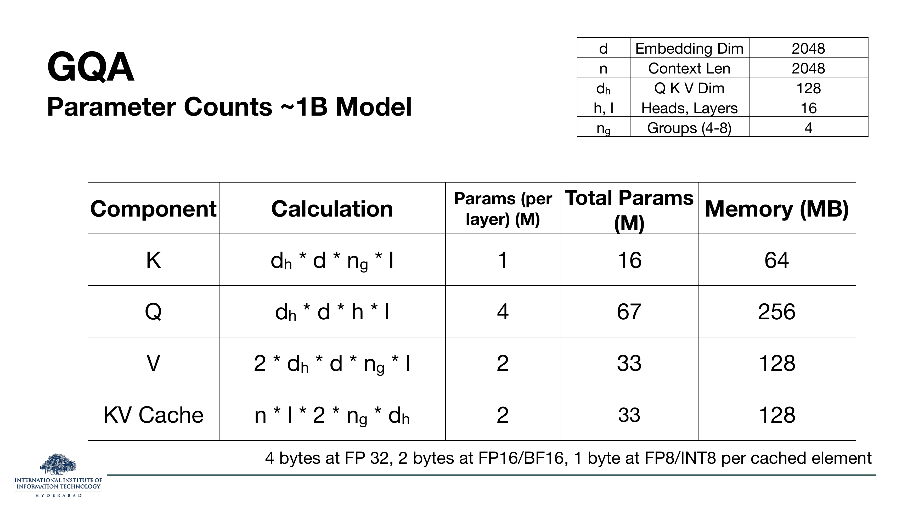
On the slide
Parameter counts for our 1B model at ng = 4 groups. The KV cache is now 128 MB: 4× smaller than MHA's 512 MB, 4× bigger than MQA's 32 MB. Exactly the interpolation the design promised.
| Attention | KV cache | Params for K | Params for V |
|---|---|---|---|
| MHA | 512 MB | 67M | 134M |
| GQA (4 groups) | 128 MB | 16M | 33M |
| MQA | 32 MB | 4M | 8M |
How to read the ratio
Everywhere h appeared in the MHA formulas, ng (number of groups) now appears in the GQA formulas. Set ng = h to get MHA back; set ng = 1 to get MQA back. Every GQA number in the table is a linear interpolation between the two.
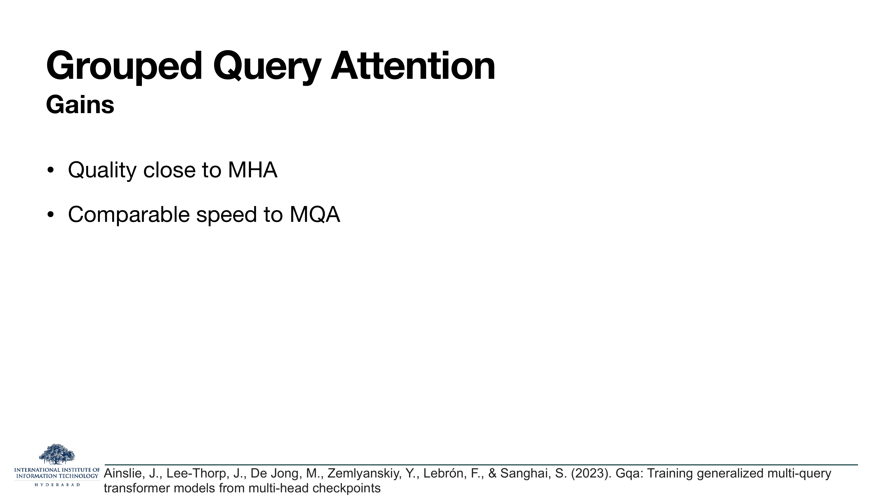
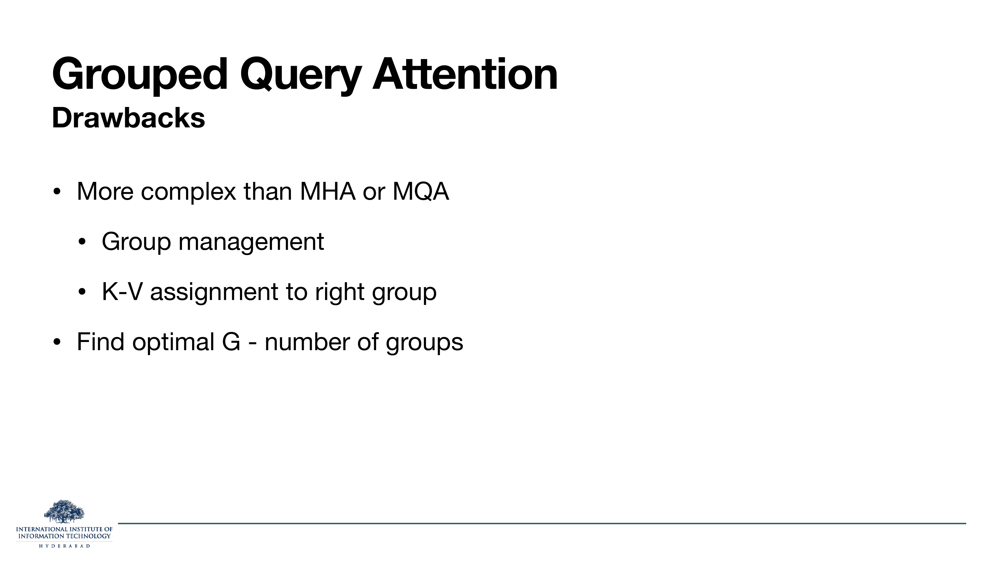
On these slides
The verdict. Gains: quality is empirically close to MHA and inference speed is empirically close to MQA — you get most of the best of both worlds. Drawbacks are mostly engineering:
- Implementation complexity. The attention kernel needs to know which query heads share which K/V head — more bookkeeping than the two extremes.
- Choosing G. One more hyperparameter to tune. The typical values landed on in practice are G = 4 or G = 8; LLaMA-2-70B uses 8.
By 2024, virtually every open-weights LLM at scale — LLaMA-2 and 3, Mistral, Qwen, Gemma, Falcon — ships with GQA rather than plain MHA. It is the standard KV-cache optimisation in the industry, and it exists because MQA was too aggressive.
§6Multi-head latent attention — compressing the cache
MQA and GQA shrink the cache by having fewer K/V pairs. Multi-Head Latent Attention (DeepSeek-V2, 2024) shrinks it by keeping all the heads but storing them in a compressed latent form. Ten slides walk through the idea, the math, and why DeepSeek reported MLA beats MHA on both fronts: a smaller cache and stronger measured quality.
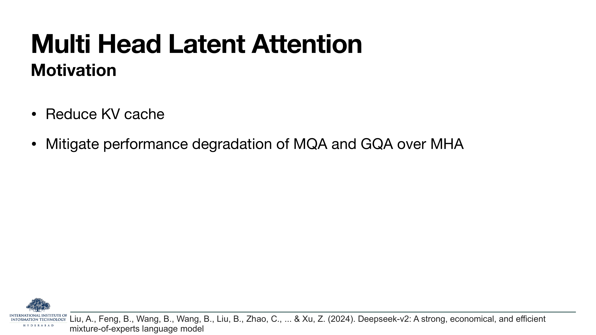
On these slides
Section divider, then the two goals. MLA wants to (1) reduce the KV cache further and (2) mitigate the quality degradation that MQA and GQA still show relative to MHA. In other words, it wants strictly better than either predecessor.
What to take from it
The trick is compression rather than sharing. MHA stores h full K/V heads per token. MQA stores 1. GQA stores G. MLA stores one low-dimensional latent vector per token, and reconstructs the K and V heads on demand at attention time.
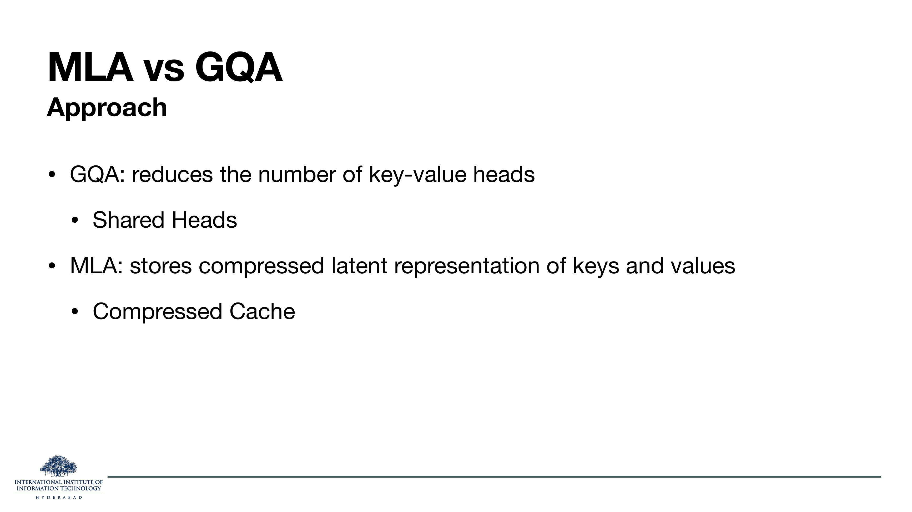
On the slide
The one-slide contrast:
- GQA: fewer K/V heads. Sharing.
- MLA: same number of K/V heads, but stored as one compressed latent. Compression.
Why the distinction matters
Sharing loses expressivity — several query heads have to make do with the same K/V. Compression, if the compressed representation is rich enough, does not. At attention time MLA reconstructs a full per-head K and V from the shared latent, so each head still gets its own K and V for the softmax — just derived from a much smaller stored quantity.
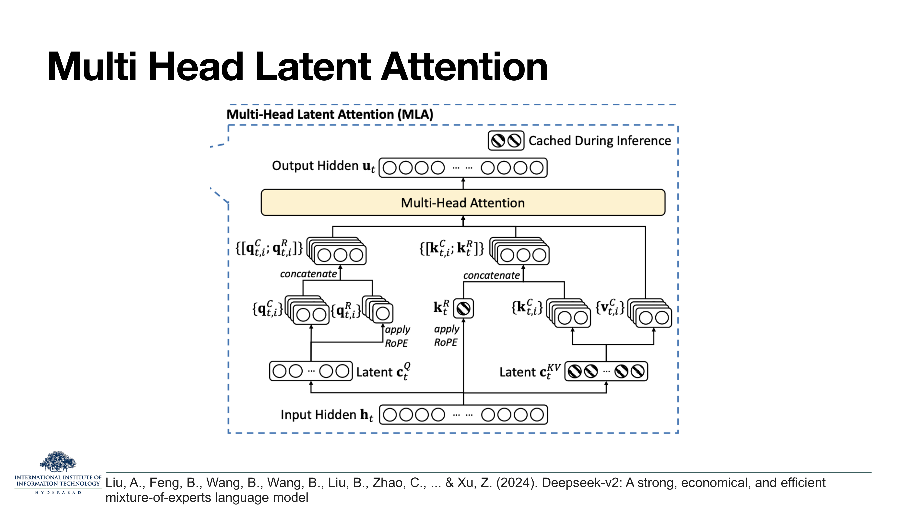
On the slide
The full MLA block from DeepSeek-V2. Read it as three ingredients:
- An input hidden state ht gets projected down into two small latents: ctQ for the queries and ctKV for the keys and values.
- At attention time, each latent is up-projected back to per-head content vectors: qt,iC for every query head, kt,iC for every key head, vt,iC for every value head.
- Because rotary position embeddings (Lecture 4, §5) do not compose with the down/up projection, RoPE is applied on separate content-free qt,iR and ktR vectors, which are concatenated with the content pieces before the softmax.
Only two things are cached: the latent ctKV and the rotary key ktR. Everything else is recomputed from those on the fly.
RoPE rotates key vectors by an angle proportional to position. If you cached compressed keys, you could not un-cache the rotation cheaply. DeepSeek's fix is to leave the content path un-rotated (cache the compressed content latent) and carry the rotation on a small, separate kR stream that is cached in full but has small dimension. The two streams are concatenated back only at attention time.
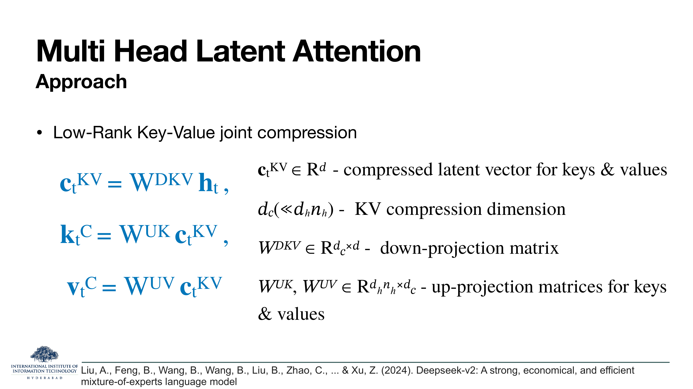
On the slide
The equations behind the picture. In one line: the K and V projections that used to be single big matrices are now factored through a small latent of dimension dc.
Here WDKV is a down-projection matrix of shape (dc, d) with dc much smaller than dh · nh, and WUK, WUV are up-projections of shape (dh · nh, dc) that reconstruct all-head K and V from the latent.
Why this is a low-rank factorisation
Instead of a full-rank K projection WK ∈ ℝ(dh·nh) × d, MLA writes it as WUK · WDKV. If dc ≪ dh·nh, the product has rank at most dc. This is the same trick LoRA uses — a big matrix expressed as the product of two skinny ones.
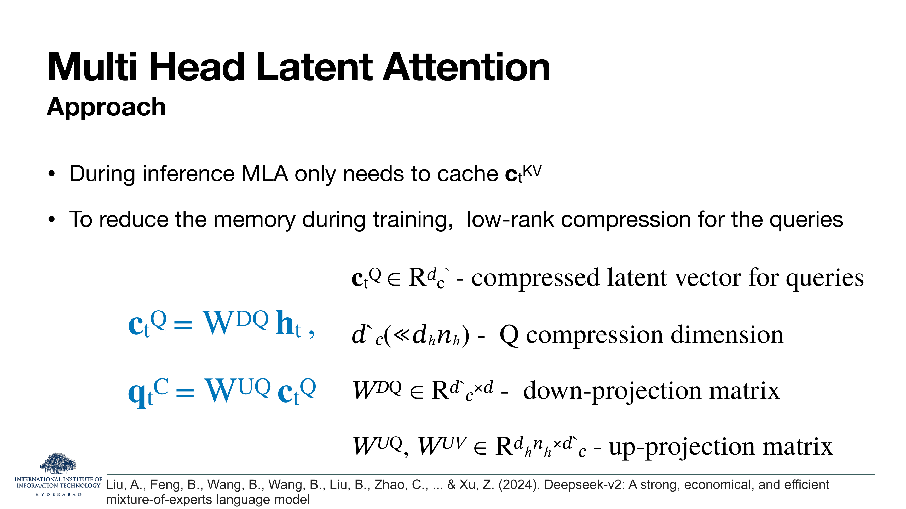
On the slide
Two things. First, a restatement of the crucial inference fact: only ctKV is cached — not per-head K and V. Second, an optional low-rank compression on the queries too, purely to save memory during training:
Why queries too
The query compression is not for the cache — queries are never cached, they are always fresh — but for training activation memory. During backprop the whole per-head query tensor has to sit in memory for the gradient computation. Compressing it through a small latent reduces that activation footprint.
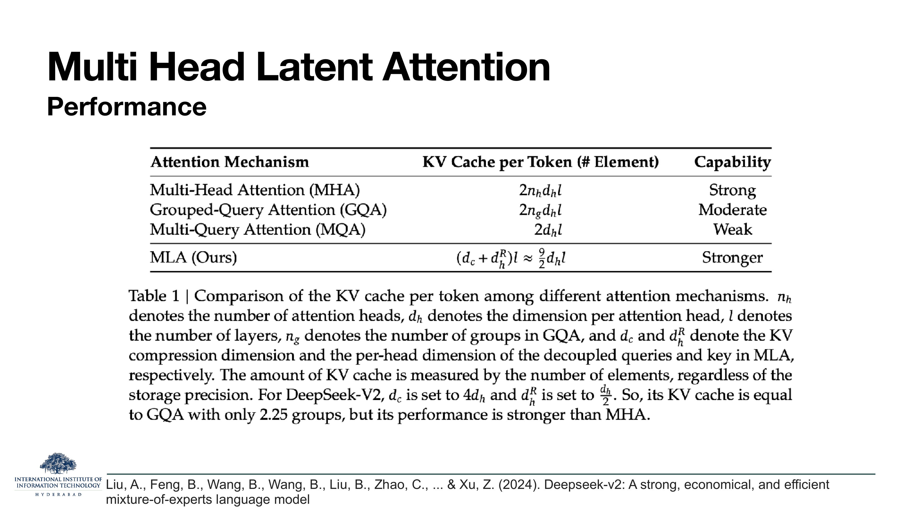
On the slide
The paper's headline comparison. The two axes are KV cache size per token and modelling capability:
| Mechanism | Cache/token | Capability |
|---|---|---|
| MHA | 2·nh·dh·l | Strong |
| GQA | 2·ng·dh·l | Moderate |
| MQA | 2·dh·l | Weak |
| MLA | (dc + dhR)·l ≈ 9/2·dh·l | Stronger |
MLA's cache is roughly the size of GQA with 2.25 groups — deep in the "very small cache" regime — but its measured quality is stronger than MHA. Compression turned out to be a mild regulariser: forcing the K/V through a bottleneck kept the model from memorising per-head idiosyncrasies. That is unusual, and it is a big part of why DeepSeek-V2 landed with a splash.
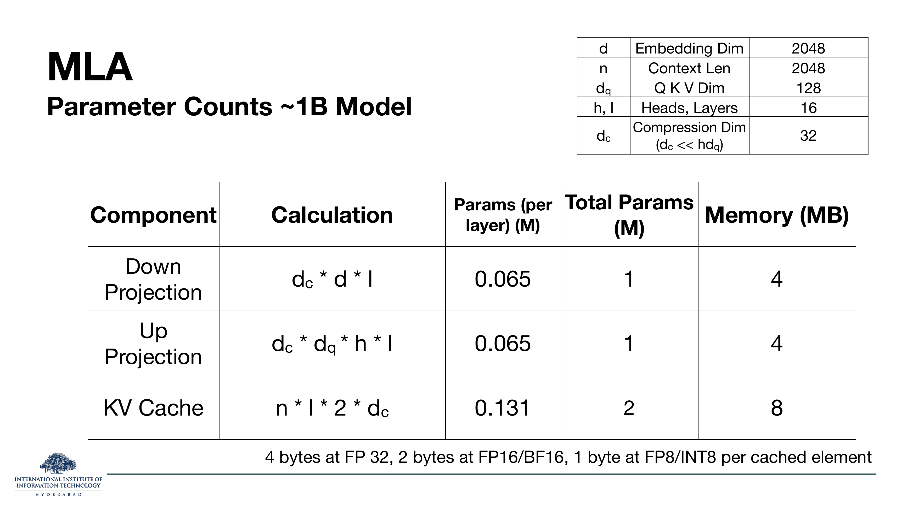
On the slide
Parameter counts for our 1B model at dc = 32. The down- and up-projections cost about 1M parameters each. The KV cache is 8 MB — 64× smaller than MHA's 512 MB and 4× smaller than MQA's 32 MB.
How to read the numbers
Compression dimension dc = 32 is tiny — smaller than a single head's dh = 128. The whole per-token cache is just those 32 numbers (plus the rotary key), stored once per layer. That is the memory profile that makes 128k-context serving practical.
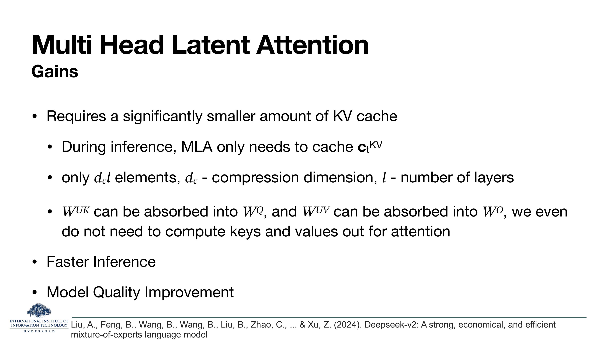
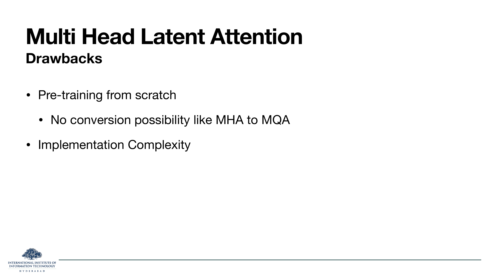
On these slides
Gains and drawbacks in one look. Gains:
- Much smaller cache. Only dc·l elements per token.
- Matrix absorption. Because the up-projection is a linear function of the latent, WUK can be pre-multiplied into WQ (query projection) and WUV into WO (output projection). At inference you never actually materialise the per-head K and V — the softmax operates directly on latent-mediated dot products. That saves FLOPs on top of saving memory.
- Faster inference and better quality. Both. Unusual for an optimisation.
Drawbacks:
- Pre-training from scratch. Unlike the MHA → GQA conversion trick (slide 33), there is no clean way to take a released MHA checkpoint and re-shape it into MLA. So MLA is only realistic if you are training the model yourself.
- Implementation complexity. The split-rope trick and the matrix-absorption identities
mean the attention kernel is quite a bit more involved. Standard PyTorch
scaled_dot_product_attentiondoes not cover this.
§7Where the field landed
Four closing slides. A parameter-count comparison across all four variants, a one-picture summary of what "cached during inference" means for each, and two tables showing which real model uses which attention as of 2024–2026.
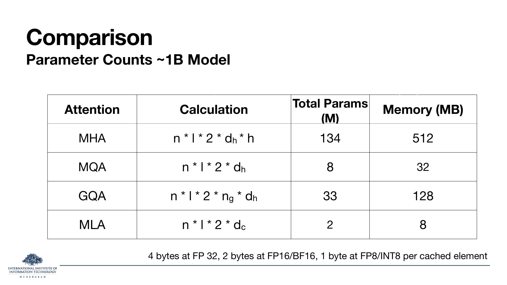
On the slide
The four variants in one row each, all on the same 1B reference model, all in FP16:
| Attention | Cache calc | Total params | Memory |
|---|---|---|---|
| MHA | n·l·2·dh·h | 134M | 512 MB |
| MQA | n·l·2·dh | 8M | 32 MB |
| GQA | n·l·2·ng·dh | 33M | 128 MB |
| MLA | n·l·2·dc | 2M | 8 MB |
How to read the ratios
MHA is the baseline. MQA divides by h = 16. GQA divides by h/ng = 4 (going from 16 heads to 4 groups). MLA divides by h·dh/dc = 64 (going from 16·128 = 2048 to 32). Every method is a story about what factor drops out of the formula.
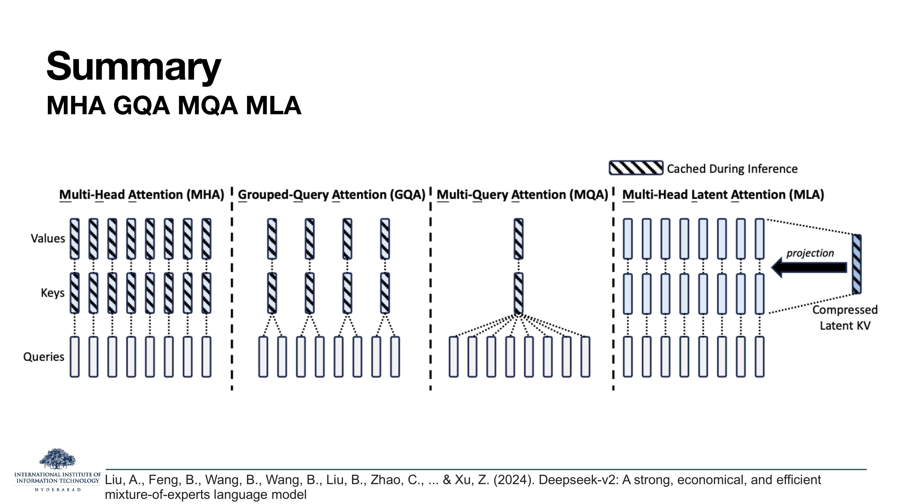
On the slide
The clearest single-picture summary of §§2, 5, and 6. Four panels, one per family, each showing the query row (blue) and the key/value rows (hatched squares = cached in memory during inference, empty squares = recomputed on the fly).
- MHA: one hatched K and one hatched V per query head. Everything cached, everything full-size.
- GQA: fewer hatched K and V columns (four here) but each still per-group full-size.
- MQA: a single hatched K and a single hatched V for all query heads.
- MLA: all K/V heads are drawn (they exist!) but they are empty — not cached. What is cached is a single hatched "compressed latent KV" vector on the right, from which all the empty K/V heads are projected on demand at attention time.
Read left to right, the story is: can we cache less? Yes, by having fewer heads (GQA), or one head (MQA), or by keeping all the heads but caching only their compressed source (MLA). Different answers, same problem.
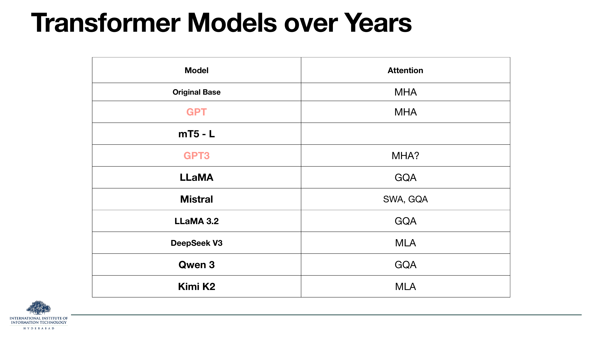
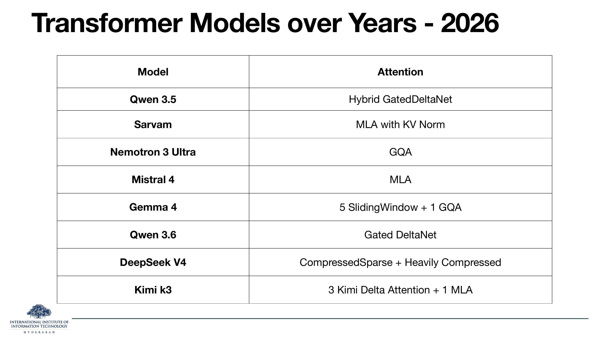
On these slides
Two tables, side by side, tracking the attention choice of real released models. The first (slide 49) covers the arc from the Vaswani base transformer through 2024:
- Original / GPT / GPT-3: plain MHA.
- LLaMA family (1, 2, 3.2): GQA.
- Mistral: sliding-window attention (SWA, a Longformer-family idea) plus GQA.
- DeepSeek V3, Kimi K2: MLA.
- Qwen 3: GQA.
The second table (slide 50) is the 2026 frontier and is worth reading slowly — it is the reason there is a whole next lecture. Almost none of these models use a single How it works from this deck any more. They stack ideas:
- Gemma 4: five sliding-window layers for every one GQA layer.
- DeepSeek V4: "CompressedSparse + Heavily Compressed" — MLA plus a sparsity pattern.
- Kimi k3: three layers of "Kimi Delta Attention" (a linear-attention variant) for every one MLA layer.
- Qwen 3.5, 3.6: Gated DeltaNet — a state-space-like How it works replacing attention entirely.
- Sarvam: MLA with an added KV-norm.
Every sparse pattern in slide 50 (SlidingWindow, CompressedSparse) is developed in Lecture 6. The "Delta" and "GatedDeltaNet" entries are state-space methods, coming later in the semester under alternate architectures. The hybrid pattern — a few layers of linear/local attention plus a small number of full-attention or MLA layers — is now the default recipe at the frontier.
From 2017 to 2023 the industry standardised on MHA; from 2023 to 2024 it standardised on GQA; in 2024 MLA emerged; in 2025–2026 the frontier stopped standardising at all and started stacking. The one constant is that everyone is still trying to make the KV cache smaller — the specific How it works just keeps changing.